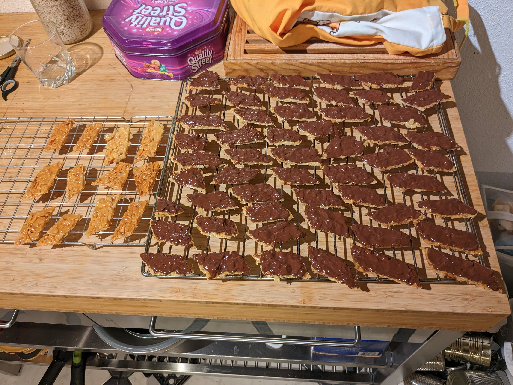

Florentins

Pour une plaque de biscuits :
- 125mL de crème
- 125g de sucre
- 50g de beurre
- 200g d'amandes effilées
- 200g de chocolat pâtissier (idéalement de chocolat de couverture)
- Faire chauffer la crème, le beurre et le sucre dans une casserole à feu moyen jusqu'à ce que le sucre soit dissous.
- Faire préchauffer le four à 150°C. Ajouter les amandes dans le mélange, et laisser sur le feu en mélangeant bien pour que ça chauffe.
- Disposer le mélange sur une plaque de four recouverte de papier sulfurisé, il faut que ça ait environ la même épaisseur partout (mais pas besoin de faire du zèle).
- Enfourner 20-25 minutes, jusqu'à ce que ça prenne une jolie couleur caramel.
- Attendre quelques minutes (pas plus !), couper le tout en losanges, et disposer les losanges sur une grille de four pour qu'ils puissent sécher. Si c'est trop liquide pour bien se couper, c'est trop tôt. Si c'est trop friable, c'est trop tard !
- Faire fondre le chocolat au bain-marie, et badigeonner les biscuits de chocolat fondu avec un pinceau.
- Déguster une fois totalement refroidis. Ça peut se garder dans une boîte à biscuits quelques semaines.